|
Roda JC - AZ (0-2) 24 september 2006
|
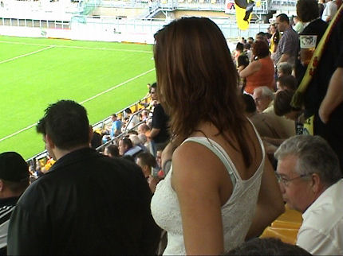
Het is iets minder druk in Z16, maar het blijft sfeervol.
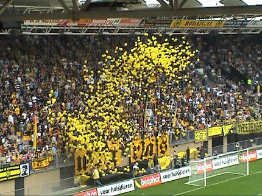
West verhoogt de sfeer met een ballonnen-actie.
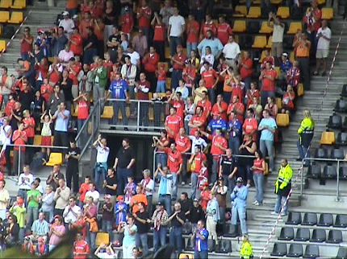
AZ met 320 supporters. Dat zijn er 300 meer dan verleden seizoen.
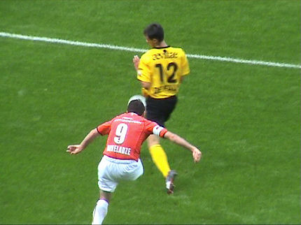
De Fauw blokkeert een schot van Arveladze.
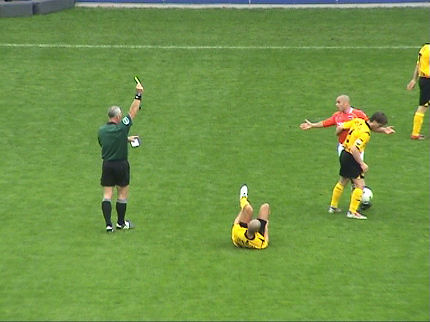
Gele kaart voor De Zeeuw na een overtreding op Ramzi.
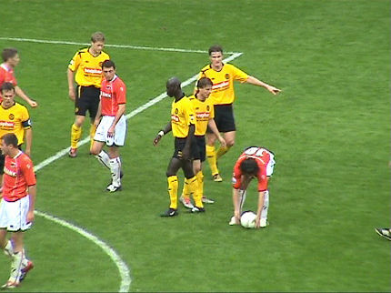
De eerste helft gaat gelijk op. Hier legt Cziommer de bal klaar voor een
vrije trap.
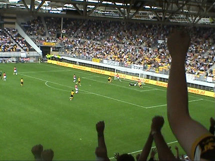
Doelman Didulica is gepasseerd maar Opdam redt net voor of net niet voor
de lijn.....
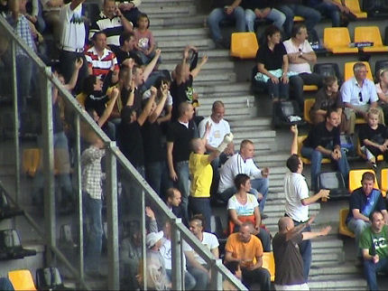
Veel vermaak in zuid-zuidwest....
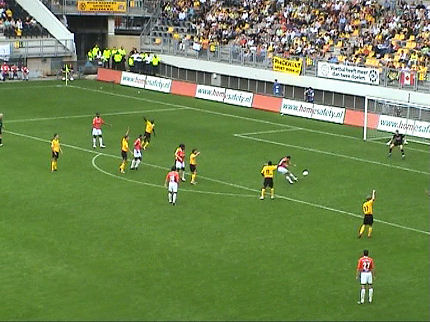
De Cler schiet knoerhard voorbij twee Rodaverdedigers. De bal belandt recht
voor de voeten van Arveladze die in de linkerbovenhoek schiet: 0-1, (69').
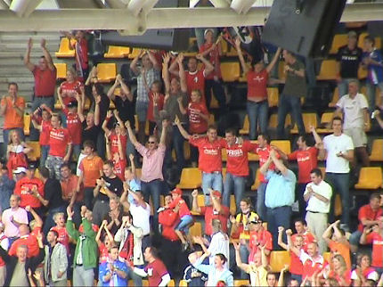
De Scheringa schavuiten schreeuwen subiet.
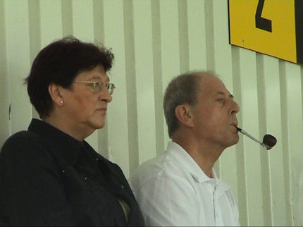
Nomme d'une pipe!
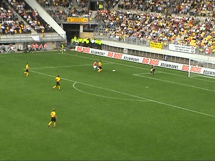
Dembele beslist de wedstrijd; 0-2, (82').
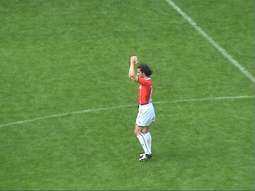
Sympathiek gebaar van Cziommer om de club waar hij herontdekt werd te
bedanken.
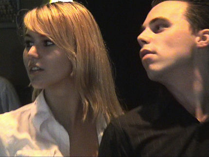
In de Kickoff.